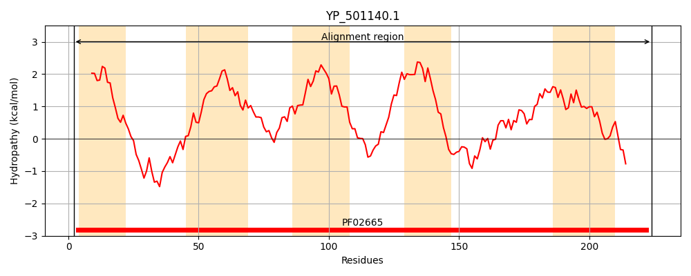
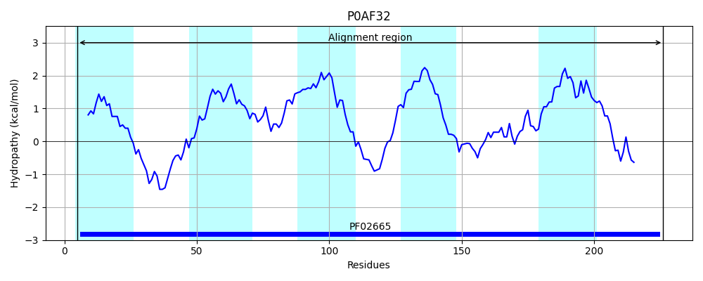

Hit Accession: P0AF32
Hit TCID: 5.A.3.1.2
Hit Description: gnl|BL_ORD_ID|8805 gnl|TC-DB|P0AF32|5.A.3.1.2 Respiratory nitrate reductase 2 gamma chain - Escherichia coli.
Mach Len: 224
e:0.000000
Query TMS Count : 5
Hit TMS Count: 5
TMS-Overlap Score: 4.750000
Predicted Substrates:CHEBI:10545;electron
BLAST Alignment:
Score: 411 , Bit scores: 162 bits, E-value: 2.9e-50, Alignment length: 224, Percentage identity: 38
Query: 2 LNQFLWVIFPYLCLVVFVAGHIARYRYDKFSWTAKSSELIERKRLMWGSLLFHLGIIPVFFGHVVGLLIPKPWMDAVGVSEHLYHIGAVYIGSIFGIITLIGMFLLTARRVTTKSIRRLSSASDIFVNFLLLLIVFMGCYATLVTNIQHPDFNYRTSLSIWFRQLFMLKPDAS-LMSGVPIAFKMHILLGFTIMACWPFTRLVHVWSVPLTYINRRYIIYRKNK 224
LN F + I+PY+C VF G RY Y +++W A SS++++++ ++ S LFH+GI+ +FFGH+ G+L P WM A + + A+ +G I G++TLIG L RR+T + +R S+ DI + +LL+ +G +T+ + Q+PD + L W + + + +S +++GV F++H++LG TI +PFTRLVHVWS P Y RRY I R +
Sbjct: 5 LNVFFYDIYPYICATVFFLGSWLRYDYGQYTWRASSSQMLDKRGMVIWSNLFHIGILGIFFGHLFGMLTPH-WMYAWFLPVAAKQLMAMVLGGICGVLTLIGGAGLLWRRLTNQRVRATSTTPDIIIMSILLIQCLLG-LSTIPFSAQYPDGSEMMKLVGWAQSIVTFRGGSSEMLNGVAFVFRLHLVLGMTIFLLFPFTRLVHVWSAPFEYFTRRYQIVRSRR 226 | Protein Hydropathy Plots: |
|---|
|  |  |
Pairwise Alignment-Hydropathy Plot:
|
|---|
 |